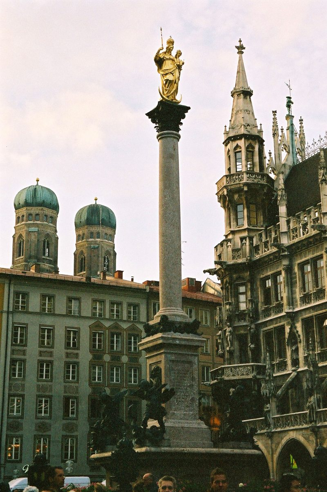

München Marienplatz: Das Herz der bayerischen Hauptstadt

Der Marienplatz in München ist das pulsierende Herz der bayerischen Hauptstadt und einer der bekanntesten Plätze Deutschlands. Mit seiner reichen Geschichte, beeindruckenden Architektur und lebendigen Atmosphäre ist er ein Muss für jeden Besucher Münchens. Hier findest du alles, was du wissen musst, um deinen Besuch optimal zu gestalten.
Anreise zum Marienplatz
Der Marienplatz ist leicht zu erreichen und liegt im Zentrum Münchens. Mit den öffentlichen Verkehrsmitteln ist er problemlos mit der U-Bahn (Linien U3 und U6) oder der S-Bahn (alle Linien) zu erreichen. Der Bahnhof Marienplatz ist direkt unter dem Platz, sodass du praktisch mitten im Geschehen aussteigst. Wer mit dem Auto kommt, sollte die Parkmöglichkeiten in den umliegenden Parkhäusern nutzen, da das Parken direkt am Platz schwierig ist.
Beste Reisezeit
Der Marienplatz ist das ganze Jahr über einen Besuch wert. Besonders charmant ist er jedoch zur Weihnachtszeit, wenn der Christkindlmarkt in voller Blüte steht und der Platz in festlichem Glanz erstrahlt. Im Sommer lädt das sonnige Wetter dazu ein, in den umliegenden Cafés zu entspannen und die lebhafte Atmosphäre zu genießen. Frühling und Herbst sind ebenfalls ideale Zeiten für einen Besuch, da das Wetter mild ist und weniger Touristen unterwegs sind.
Highlights am Marienplatz
Einige der wichtigsten Sehenswürdigkeiten Münchens befinden sich am oder in unmittelbarer Nähe des Marienplatzes. Hier sind die Highlights:
- Neues Rathaus: Das imposante Gebäude mit seinem berühmten Glockenspiel ist ein Wahrzeichen Münchens. Zu jeder vollen Stunde (im Sommer auch zur halben) kannst du das Glockenspiel bewundern, das eine historische Szene darstellt.
- Altes Rathaus: Nicht weit vom Neuen Rathaus entfernt, steht das Alte Rathaus, ein weiteres architektonisches Juwel. Es beherbergt heute das Spielzeugmuseum.
- Mariensäule: Die gusseiserne Säule in der Mitte des Platzes ist ein Symbol für München und wurde im 17. Jahrhundert errichtet. Sie ist dem Schutzheiligen Marias gewidmet.
- Viktualienmarkt: Nur wenige Gehminuten entfernt liegt der Viktualienmarkt, ein Paradies für Feinschmecker. Hier gibt es frische Lebensmittel, regionale Spezialitäten und herzhafte Snacks.
- Frauenkirche: Etwas weiter entfernt, aber dennoch gut zu Fuß erreichbar, befindet sich die beeindruckende Frauenkirche, das größte und bekannteste Gotteshaus Münchens.
Essen und Trinken
Der Marienplatz bietet eine Vielzahl von Möglichkeiten, um die bayerische Küche zu genießen. In den vielen Biergärten und Restaurants rund um den Platz kannst du traditionelle Gerichte wie Schweinshaxe, Brezn oder Obatzda probieren. Besonders empfehlenswert ist ein Besuch im Ratskeller, einem traditionsreichen Restaurant im Keller des Neuen Rathauses, das bayerische Spezialitäten serviert. Für einen schnellen Imbiss lohnen sich die Bratwurststände oder ein Besuch auf dem Viktualienmarkt mit seinen zahlreichen Essensständen.
Fazit
Der Marienplatz in München ist mehr als nur ein zentraler Platz – er ist das pulsierende Herz der Stadt und ein Ort, an dem Geschichte, Kultur und moderne Lebensfreude aufeinandertreffen. Ob du die beeindruckende Architektur bewunderst, das berühmte Glockenspiel erlebst oder einfach nur die Atmosphäre genießt – ein Besuch des Marienplatzes ist ein unvergessliches Erlebnis. Plan deinen Besuch sorgfältig und lass dich von der bayerischen Gastfreundschaft verwöhnen.
Haiktec
- 7 Erfolgsstrategien für kleine Restaurants und Cafés: Mehr Gäste, mehr Umsatz
- Schwarzwald-Reisekosten-Tracker & Aktivitäten-Planer für internationale Gäste
- Saarland & Mosel Entdecker: 7 Einfache Schritte zu Verborgenen Juwelen und Lokalen Geheimtipps
Text mit KI erstellt und automatisch geprueft.